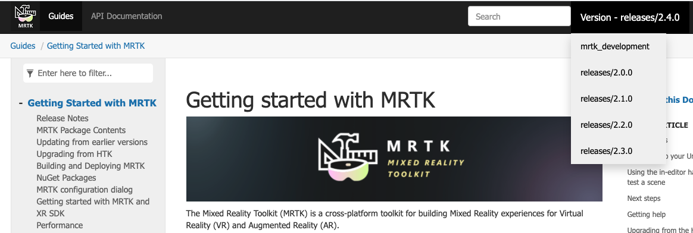

Welcome to MRTK

The Mixed Reality Toolkit (MRTK) is a cross-platform toolkit for building Mixed Reality experiences for Virtual Reality (VR) and Augmented Reality (AR).
Development
If you're new to MRTK or Mixed Reality development in Unity, we recommend you start at the beginning of our Unity development journey. The Unity development journey is the recommended starting point for MRTK, specifically created to walk you through the installation, core concepts, and usage of MRTK in Unity.
Caution
The Unity development journey currently uses MRTK version 2.4.0 and Unity 2019.4. If you're working with other configurations it's still recommended that you start there, but you can also refer to the installation instructions.
Documentation Versioning
We have complete documentation for all release versions. The mrtk_development branch is the latest and greatest but is still in active development. We recommend using the highest numbered release branch for stability. Versions can be selected from the dropdown at the top-right of the screen:

Getting help
If you run into issues caused by MRTK or otherwise have questions about how to do something, there are a few resources that can help:
- For bug reports, please file an issue on the GitHub repo.
- For questions, please reach out on either StackOverflow or the mixed-reality-toolkit channel on Slack. You can join the Slack community via the automatic invitation sender.